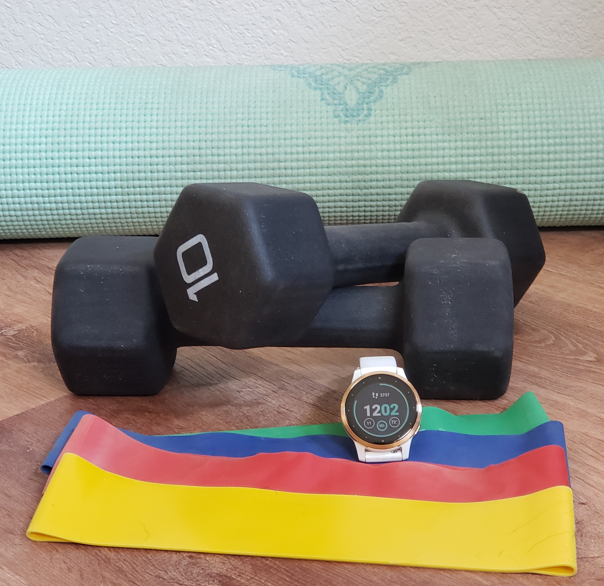

What I Learned From My Beachbody Workouts and Fitness Watch Data

Introduction
I was looking for an analysis hobby project to dust off my R programming and data analysis skills after over two years since completing my Master’s program. Thinking about the data I accumulate in my everyday life, I started wondering what my Beachbody online workout data would tell me.
I began using Beachbody products in 2013 when my husband bought the DVD version of original P90x program with instructor Tony Horton, which we completed together to prepare for a Mui Thai Kickboxing class. After that awesome experience, some years later we purchased the P90x3 DVD which reduced its workout lengths from ~45-60 minutes to a more palatable 30 minutes, which we could commit too with full time engineering jobs. I was pretty happy with the effectiveness of these workouts and continued to use them intermittently for the next several years.
It wasn’t until 2019 when a friend introduced me to Beachbody On-Demand (BOD) that I began to consider branching out my workout experiences. Then when 2020 hit with COVID-19 and work-from-home, I pulled the trigger and bought the annual subscription, which at $99/yr is quite reasonable compared to a gym membership. After all, what kind of a price can you put on good health (mental and physical)?
The second addition to my digital workout arsenal came in the form of a Garmin Vivoactive 4S fitness watch. I am usually a tech trend lagger so it was my husband who bought this for me in Christmas 2020. I started tracking my walking, cycling and Beachbody workouts so I could get a sense of my distance/steps, heart rate and expended calories.
I’ve been fairly diligent with the workouts since I schedule time on my work calendar to do them every day, but I was terrible at keeping track and didn’t record the workouts or synch any data between my watch and the app. Now, almost 3 years later, I started wondering what my workout history data could tell me.
Data Sources and Column Descriptions
Beachbody On-Demand (BOD):
BOD does keep a workout history but with several major downsides:
- The data is not extractable into a worksheet. To collect my data I had to login into my account, find the history and click each day to manually record the available information, which took about an hour.
- Some data had to be filled in manually. For example the instructor information is not within the history, but something I had to pull from the workout description itself. I also wanted to know when I started and finished a program, which meant that I had to manually code the day number of the program myself. Lastly I wanted insights into the activity type, so I manually coded the exercise as Yoga, Cardio, Meditation, or Abs.
- The history only includes the past year’s worth of data. This means that some programs and trends are not able to be adequately represented due to missing data.
- This manual encoding only has date information and no time-stamp to align the Garmin activity. This created a few problems when I had done more than one workout in the same day but did not have corresponding watch data for both of them.
Key attributes of the BOD data are:
| Column Name | Description |
|---|---|
| *Date | date of workout (year-month-day) |
| Time | length of workout (minutes) |
| Program | the name of the program |
| Instructor | the main instructor of the program |
| Activity.Type | distinguish yoga from cardio or short abs workouts |
Garmin Watch:
My watch keeps track of calories, time, max and avg heart rate information. It also tracks other things but these are the ones I’m interested in for this initial analysis. Garmin keeps track of workout history and the Connect App conveniently has an extract-to-.csv format feature I ran on my computer. However the downside was that the watch only saved my workout history for the last 10 months because I had not been syncing my watch to my phone app on a regular basis. Lesson learned that I need to be doing this more frequently.
Key attributes of the Garmin watch data are:
| Column Name | Description |
|---|---|
| *Date | date of workout (year-month-day hr:min:sec) |
| Activity.Type | Cardio, Cycling, Running, Walking |
| Calories | total calories burned during the workout |
| Time | length of workout (hr:min:sec), converted to minute integers |
| Avg.HR | average heart rate (bpm) |
| Max.HR | maximum heart rate (bpm) |
*Date is a key column used to merge/combine the two datasets. Note that time is removed from the watch data so alignment is on day only.
The combined dataset between BOD and Garmin will filter to only Activity Type of ‘Cardio’, which is what I use when setting up activity tracking on my watch. I don’t usually turn on tracking for yoga or abs workout types so that data is not available to correlate.
Data Quality
Deriving an accurate dataset involved quite a few manual steps and fixing various issues.
User Error:
- At times I will start an activity tracking on my watch and forget to turn it off, which then forces me to discard the whole record. This will cause records to show up on BOD with no associated watch data.
- Activities where I forget to turn the watch activity tracking on, or forget to put the watch on all together.
- Activities which start but get paused after only recording a few minutes of time and I forget to unpause again. Thus the calories indicate by the watch data are significantly misrepresenting the actual workout length from BOD.
These issues will result in missing data and potentially erroneous data. Therefore, any conclusions will have to keep that in mind and may require an iterative process of the user (me) to review the results and correct as I discover them.
Multiple workouts in one day:
The datasets are joined by date, without the datetime stamp. Therefore invalid data may be the result of combining datasets with one or more entry per day in either BOD or Garmin. In those cases, joining datasets may not know how to align due to lack of timestamp to assist in aligning them. These could be cleaned manually by making some intuitive inferences.
Vacation and Sick time:
There are some weeks with zero workouts, which I assume are due to sick or vacation. For weeks with low number of workouts it could be due to coming off of vacation or sick time, so the average number of workouts per week could be slightly skewed to the low side.
Software Prerequisites
- R lanugauge, R-Studio IDE
- R packages: ggplot2, dplyr, agricolae
Analysis High Level Summary
From 09/28/2021 to 09/09/2022:
| BOD Summary | |
|---|---|
| Total Calories: | 21204 (~ 6 lbs @3500 cals per lb) |
| Total #Workouts: | 162 |
| Total Time: | 4767 min (79.4 hrs) |
| Avg #Workouts per week: | 3.5 |
| Variety of Experiences: | 12 instructors over 19 different programs |
From 11/24/2021 to 09/09/2022:
| BOD with Watch Data | |
|---|---|
| Total #Workouts: | 95 |
| Heart rate: | 165 (avg max), 134 (overall avg) |
| calories burned per min: | 8.7 (avg) |
Mismatch of Recorded Time
Compare BOD time to watch time to understand how aligned the recorded calorie and HR data from the watch are to the completed workout. Values not within about 10 minutes of each other indicate an integrity issue.
To work around that problem, the analysis will calculate calories-per-minute using the watch time only, so that it is a relative number. Note then that the total calories reported by the watch is less than the true value of calories burned during the BOD workouts.

This graph shows 5 workouts recorded by the watch with times below 10 minutes, likely a result of user error previously mentioned.
Beachbody Activity Types
My Beachbody workouts were categorized into 3 activity types: Yoga, Cardio and Abs. I wanted to know what percentage of my workouts were yoga versus cardio.

About a quarter of my workouts are yoga while three quarters focus on cardio.
Beachbody Instructors

Autumn is clearly my favorite instructor. I’ve done 84 of her workouts (>50% of the total workouts), while Tony Horton comes in second at 34 workouts(>20% of the total workouts). However clearly Tony has been my go-to yoga instructor!
How Long Is Each Workout?


I’ve been consistently completing ~ 30 minute workouts
The typical (median) workout length is 30 minutes. The higher values on the left-hand side were due to ending a previous program (80-Day Obsession) which had workouts between 30-60 minutes.
Which Day do I prefer Working Out?

Most preferred days to workout are Monday-Thursday. Least preferred day is Saturday when I tend to do non-BOD activities
Program Variety
Questions answered:
- Which Beachbody programs have I tried?
- Which program(s) do I keep coming back to?

##
##
## |Program |Instructor | workout_cnt| prop|
## |:----------------------------|:---------------|-----------:|----:|
## |9 Week Control Freak |Autumn | 69| 43|
## |P90x3 |Tony Horton | 24| 15|
## |Morning Meltdown 100 |Jericho | 11| 7|
## |22 Minute Hard Corps |Tony Horton | 10| 6|
## |80 day obsession |Autumn | 6| 4|
## |Barre Blend |Elise | 6| 4|
## |21 Day Fix Extreme Real Time |Autumn | 4| 2|
## |3 Week Yoga Retreat |Vitas | 4| 2|
## |Tai Cheng |Dr. Mark Cheng | 4| 2|
## |21 Day Fix Real Time |Autumn | 3| 2|
## |3-Day Yoga Refresh |Ted | 3| 2|
## |Focus T25 |Shaun T | 3| 2|
## |Yoga Studio |Ted | 3| 2|
## |3-Day Yoga Refresh |Vitas | 2| 1|
## |Job 1 |Jennifer Jacobs | 2| 1|
## |Yoga Studio |Jericho | 2| 1|
## |#MBF |Megan Davies | 1| 1|
## |21 Day Fix Extreme |Autumn | 1| 1|
## |3-Day Yoga Refresh |Elise | 1| 1|
## |4 Weeks for Every Body |Autumn | 1| 1|
## |Just Your Body Weight |Carmel | 1| 1|
## |Xtend Barre |Andrea Rogers | 1| 1|The past year has been dominated by the ‘9 Week Control Freak’ program by instructor Autumn Calabrese. That program has 45 total workouts (5 workouts per week x 3 phases x 3 weeks per phase). Since I’ve done 69 from that program, it shows that I completed it once and started doing it again.
Calories vs Heart Rate
Questions to answer:
- What is the correlation of rate of calories burned versus the average heart rate during the workout?
- Quantify the calories burned per minute versus the average heart rate to associate the payoff to the effort.

 This two-way plot shows a pretty strong correlation between average heart rate and calories burned per minute. This data supports a fairly basic intuition that higher effort (higher BPM) will result in more calories burned. But note that this calculation provides an actual number.
This two-way plot shows a pretty strong correlation between average heart rate and calories burned per minute. This data supports a fairly basic intuition that higher effort (higher BPM) will result in more calories burned. But note that this calculation provides an actual number.
An extra 1.2 calories per minute can be burned by increasing heart rate by 10 bpm.
Does Avg.HR Differ by Program?
Run a one-way ANOVA to test for significance of Avg.HR by Program. Then a Tukey test will do a simultaneous comparison to group the programs by Avg.HR so that I can visualize which programs produce a similar level of effort.

Programs which give me the highest average heart rate (and hence more calories burned per minute) are Focus T25, Morning Meltdown 100, P90x3, JYBW, Barre Blend and 9 Week Control Freak. I only tried one workout from ‘4 Weeks for Every Body’ program so far, but it’s seems to take much less effort than the other programs
Which workouts get my heart rate the highest?
The table below shows the workout description in order of the maximum Avg.HR I was able to achieve. (I used max instead of mean to avoid skew which could appear in results due to workouts I had done fewer times than others).
For the most efficient calorie burn, I should return to 9 Week Control Freak’s Tabata Cardio workout. I also know I enjoy a good low-impact workout to take it easier on my aging joints, so this table shows that Barre Blend’s Cardio Blend is not far down the list.
##
##
## |Program |Description | avg_hr|
## |:----------------------------|:-----------------------|------:|
## |9 Week Control Freak |Tabata Cardio | 156|
## |Morning Meltdown 100 |LIT Cardio | 150|
## |22 Minute Hard Corps |Cardio 1 | 148|
## |Focus T25 |Cardio | 147|
## |9 Week Control Freak |Back & Legs | 144|
## |9 Week Control Freak |Biceps & Triceps | 144|
## |Barre Blend |Cardio Blend | 144|
## |P90x3 |Triometrics | 144|
## |22 Minute Hard Corps |Resistance 1 | 143|
## |22 Minute Hard Corps |Resistance 2 | 143|
## |9 Week Control Freak |Shoulders | 143|
## |9 Week Control Freak |Shoulders & Biceps | 143|
## |Focus T25 |Speed 1.0 | 143|
## |Barre Blend |Barre | 142|
## |21 Day Fix Extreme Real Time |Plyo Fix Extreme | 140|
## |9 Week Control Freak |Back & Bicepts | 140|
## |Focus T25 |Total Body Circuit | 140|
## |Just Your Body Weight |Ladder Cardio 1 | 140|
## |21 Day Fix Real Time |Total Body Cardio Fix | 139|
## |22 Minute Hard Corps |Cardio 3 | 138|
## |9 Week Control Freak |Chest & Triceps | 138|
## |9 Week Control Freak |Chest & Tricepts | 138|
## |9 Week Control Freak |Back & Biceps | 137|
## |9 Week Control Freak |Back & Chest | 137|
## |9 Week Control Freak |Total Body Tone | 136|
## |Job 1 |Sample Workout | 134|
## |Morning Meltdown 100 |Total Body Badass | 134|
## |21 Day Fix Extreme Real Time |Upper Fix Extreme | 132|
## |Barre Blend |Classic Full Body Blend | 132|
## |22 Minute Hard Corps |Battle Buddy | 131|
## |22 Minute Hard Corps |Resistance 3 | 128|
## |21 Day Fix Real Time |Lower Fix | 127|
## |Tai Cheng |Ward Off | 127|
## |Xtend Barre |Barre | 124|
## |21 Day Fix Real Time |Upper Fix | 122|
## |Job 1 |Back, Glutes, Core | 117|
## |21 Day Fix Extreme Real Time |Pilates | 105|
## |4 Weeks for Every Body |PULL | 104|Conclusion: What Did I Learn and How Will I Behave Differently?
This analysis exposed what a lazy fitness tracker user I am. Even though apps like BOD have a tracking mechanism, I don’t follow through with logging because it involves additional app button clicks that tend to annoy me. I will make an effort to do better along with hoping that the technology improves. I will also take the time to synch my Garmin watch data to the app more often to avoid losing the history.
I was proud of myself to see the consistency of workouts for the last 12 months, but somewhat surprised to see how few pounds worth of calories I had actually burned from the Beachbody workouts (only 6 pounds). However it was motivating to see data that supports the additional calories per minute I can burn if I up my effort and get my heart rate up for longer periods of time. I also appreciated the data that supported my intuition about which programs are more effective than others for heart rate and effective calorie burning. Now that I’ve seen the data, I’ll definitely be sprinkling the 9 Week Control Freak Tabata Cardio more often into my routine.
The only disappointment I encountered through this process was the difficulty to extract the Beachbody data from the app and being limited by data beyond a year ago. I was really hoping to compare complete programs like Barre Blend and 80 Day Obsession which were completed over a year ago.
The analysis enabled me to realize how technological feature advancement in smart watches could improve the quality of the data and open doors for more insights. For example the ability to connect directly to online programs like BOD could enable users to easily associate calories and heart rate to specific programs and workouts. This could be coupled with automated social posts when users hit achievements like total calories burned or beat personal records for max avg heart rate.
From this analysis I’m glad I learned how to enable my smart watch to auto-start and auto-stop activities which I hope will improve my partial and missing calories and heart rate data. Before this analysis I didn’t realize the impact that my user-errors would have on the analytics.
I look forward to the future of fitness watches and automated activity tracking capabilities, and I hope there will be more synergy with online workout programs to bring fitness tips and insights to users like myself.
Appendix
Full Tukey Analysis
## $statistics
## MSerror Df Mean CV
## 57.18118 82 134.3158 5.629885
##
## $parameters
## test name.t ntr StudentizedRange alpha
## Tukey Program 13 4.731866 0.06
##
## $means
## Avg.HR std r Min Max Q25 Q50 Q75
## 21 Day Fix Extreme Real Time 125.6667 18.339393 3 105 140 118.50 132.0 136.00
## 21 Day Fix Real Time 129.3333 8.736895 3 122 139 124.50 127.0 133.00
## 22 Minute Hard Corps 139.2857 7.341986 7 128 148 134.50 143.0 143.50
## 4 Weeks for Every Body 104.0000 NA 1 104 104 104.00 104.0 104.00
## 9 Week Control Freak 134.4286 6.955421 63 118 156 130.00 135.0 138.00
## Barre Blend 134.5000 6.862944 6 127 144 130.50 132.0 139.50
## Focus T25 143.3333 3.511885 3 140 147 141.50 143.0 145.00
## Job 1 125.5000 12.020815 2 117 134 121.25 125.5 129.75
## Just Your Body Weight 140.0000 NA 1 140 140 140.00 140.0 140.00
## Morning Meltdown 100 142.0000 11.313708 2 134 150 138.00 142.0 146.00
## P90x3 142.0000 2.828427 2 140 144 141.00 142.0 143.00
## Tai Cheng 127.0000 NA 1 127 127 127.00 127.0 127.00
## Xtend Barre 124.0000 NA 1 124 124 124.00 124.0 124.00
##
## $comparison
## NULL
##
## $groups
## Avg.HR groups
## Focus T25 143.3333 a
## Morning Meltdown 100 142.0000 a
## P90x3 142.0000 a
## Just Your Body Weight 140.0000 a
## 22 Minute Hard Corps 139.2857 a
## Barre Blend 134.5000 a
## 9 Week Control Freak 134.4286 a
## 21 Day Fix Real Time 129.3333 ab
## Tai Cheng 127.0000 ab
## 21 Day Fix Extreme Real Time 125.6667 ab
## Job 1 125.5000 ab
## Xtend Barre 124.0000 ab
## 4 Weeks for Every Body 104.0000 b
##
## attr(,"class")
## [1] "group"